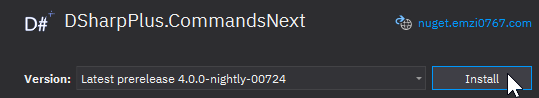
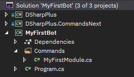
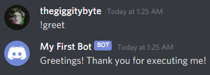
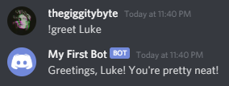
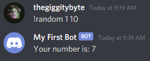
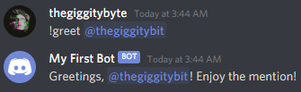
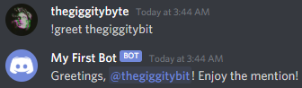
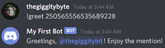

Warning
CommandsNext has been replaced by Commands. Both this article and CommandsNext itself is no longer maintained and may contain outdated information. CommandsNext will be deprecated in version 5.1.0 of DSharpPlus.
Note
This article assumes you've recently read the article on writing your first bot.
Introduction to CommandsNext
This article will introduce you to some basic concepts of our native command framework: CommandsNext. Be sure to
install the DSharpPlus.CommandsNext package from NuGet before continuing.

Writing a Basic Command
Create a Command Module
A command module is simply a class which acts as a container for your command methods. Instead of registering individual commands, you'd register a single command module which contains multiple commands. There's no limit to the amount of modules you can have, and no limit to the amount of commands each module can contain. For example: you could have a module for moderation commands and a separate module for image commands. This will help you keep your commands organized and reduce the clutter in your project.
Our first demonstration will be simple, consisting of one command module with a simple command. We'll start by creating
a new folder named Commands which contains a new class named MyFirstModule.

Give this new class public access and have it inherit from BaseCommandModule.
public class MyFirstModule : BaseCommandModule
{
}
Create a Command Method
Within our new module, create a method named GreetCommand marked as async with a Task return type. The first
parameter of your method must be of type @DSharpPlus.CommandsNext.CommandContext, as required by CommandsNext.
public async Task GreetCommand(CommandContext ctx)
{
}
In the body of our new method, we'll use @DSharpPlus.CommandsNext.CommandContext.RespondAsync* to send a simple message.
await ctx.RespondAsync("Greetings! Thank you for executing me!");
Finally, mark your command method with the @DSharpPlus.CommandsNext.Attributes.CommandAttribute so CommandsNext will know to treat our method as a command method. This attribute takes a single parameter: the name of the command.
We'll name our command greet to match the name of the method.
[Command("greet")]
public async Task GreetCommand(CommandContext ctx)
{
await ctx.RespondAsync("Greetings! Thank you for executing me!");
}
Your command module should now resemble this:
using System.Threading.Tasks;
using DSharpPlus.CommandsNext;
using DSharpPlus.CommandsNext.Attributes;
public class MyFirstModule : BaseCommandModule
{
[Command("greet")]
public async Task GreetCommand(CommandContext ctx)
{
await ctx.RespondAsync("Greetings! Thank you for executing me!");
}
}
Cleanup and Configuration
Before we can run our new command, we'll need modify our main method. Start by removing the event handler we created previously.
var discord = new DiscordClient();
discord.MessageCreated += async (s, e) => // REMOVE
{ // ALL
if (e.Message.Content.ToLower().StartsWith("ping")) // OF
await e.Message.RespondAsync("pong!"); // THESE
}; // LINES
await discord.ConnectAsync();
Next, call the @DSharpPlus.CommandsNext.ExtensionMethods.UseCommandsNext* extension method on your @DSharpPlus.DiscordClient instance and pass it a new @DSharpPlus.CommandsNext.CommandsNextConfiguration instance. Assign the resulting @DSharpPlus.CommandsNext.CommandsNextExtension instance to a new variable namedcommands. This important step will enable CommandsNext for your Discord client.
var discord = new DiscordClient();
var commands = discord.UseCommandsNext(new CommandsNextConfiguration());
Create an object initializer for @DSharpPlus.CommandsNext.CommandsNextConfiguration and assign the
@DSharpPlus.CommandsNext.CommandsNextConfiguration.StringPrefixes property a new string array containing your desired
prefixes. Our example below will only define a single prefix: !.
new CommandsNextConfiguration()
{
StringPrefixes = new[] { "!" }
}
Now we'll register our command module. Call the @DSharpPlus.CommandsNext.CommandsNextExtension.RegisterCommands* method on our @DSharpPlus.CommandsNext.CommandsNextExtension instance and provide it with your command module.
var discord = new DiscordClient();
var commands = discord.UseCommandsNext();
commands.RegisterCommands<MyFirstModule>();
await discord.ConnectAsync();
Alternatively, you can pass in your assembly to register commands from all modules in your program.
commands.RegisterCommands(Assembly.GetExecutingAssembly());
Your main method should look similar to the following:
static async Task Main(string[] args)
{
var discord = new DiscordClient(new DiscordConfiguration());
var commands = discord.UseCommandsNext(new CommandsNextConfiguration()
{
StringPrefixes = new[] { "!" }
});
commands.RegisterCommands<MyFirstModule>();
await discord.ConnectAsync();
await Task.Delay(-1);
}
Running Your Command
It's now the moment of truth; all your blood, sweat, and tears have lead to this moment. Hit F5 on your keyboard to
compile and run your bot, then execute your command in any channel that your bot account has access to.

Taking User Input
Command Arguments
Now that we have a basic command down, let's spice it up a bit by defining arguments to accept user input.
Defining an argument is simple; just add additional parameters to your signature of your command method. CommandsNext will automatically parse user input and populate the parameters of your command method with those arguments. To demonstrate, we'll modify our greet command to greet a user with a given name.
Head back to MyFirstModule and add a parameter of type string to the GreetCommand method.
[Command("greet")]
public async Task GreetCommand(CommandContext ctx, string name)
CommandsNext will now interpret this as a command named greet that takes one argument.
Next, replace our original response message with an interpolated string which uses our new parameter.
public async Task GreetCommand(CommandContext ctx, string name)
{
await ctx.RespondAsync($"Greetings, {name}! You're pretty neat!");
}
That's all there is to it. Smack F5 and test it out in a channel your bot account has access to.

Now, you may have noticed that providing more than one word simply does not work. For example, !greet Luke Smith will
result in no response from your bot.
This fails because a valid overload could not be found for your command.
CommandsNext will split arguments by whitespace. This means Luke Smith is counted as two separate arguments; Luke
and Smith. In addition to this, CommandsNext will attempt to find and execute an overload of your command that has the
same number of provided arguments. Together, this means that any additional arguments will prevent CommandsNext from
finding a valid overload to execute.
The simplest way to get around this would be to wrap your input with double quotes. CommandsNext will parse this as one argument, allowing your command to be executed.
!greet "Luke Smith"
If you would prefer not to use quotes, you can use the @DSharpPlus.CommandsNext.Attributes.RemainingTextAttribute attribute on your parameter. This attribute will instruct CommandsNext to parse all remaining arguments into that parameter.
public async Task GreetCommand(CommandContext ctx, [RemainingText] string name)
Alternatively, you can use the params keyword to have all remaining arguments parsed into an array.
public async Task GreetCommand(CommandContext ctx, params string[] names)
A more obvious solution is to add additional parameters to the method signature of your command method.
public async Task GreetCommand(CommandContext ctx, string firstName, string lastName)
Each of these has their own caveats; it'll be up to you to choose the best solution for your commands.
Argument Converters
CommandsNext can convert arguments, which are natively string, to the type specified by a command method parameter.
This functionality is powered by argument converters, and it'll help to eliminate the boilerplate code needed to parse
and convert string arguments.
CommandsNext has built-in argument converters for the following types:
| Category | Types |
|---|---|
| Discord | DiscordGuild, DiscordChannel, DiscordMember, DiscordUser,DiscordRole, DiscordMessage, DiscordEmoji, DiscordColor |
| Integral | byte, short, int, long, sbyte, ushort, uint, ulong |
| Floating-Point | float, double, decimal |
| Date | DateTime, DateTimeOffset, TimeSpan |
| Character | string, char |
| Boolean | bool |
You're also able to create and provide your own custom argument converters, if desired.
Let's do a quick demonstration of the built-in converters.
Create a new command method above our GreetCommand method named RandomCommand and have it take two integer
arguments. As the method name suggests, this command will be named random.
[Command("random")]
public async Task RandomCommand(CommandContext ctx, int min, int max)
{
}
Make a variable with a new instance of Random.
var random = new Random();
Finally, we'll respond with a random number within the range provided by the user.
await ctx.RespondAsync($"Your number is: {random.Next(min, max)}");
Run your bot once more with F5 and give this a try in a text channel.

CommandsNext converted the two arguments from string into int and passed them to the parameters of our command,
removing the need to manually parse and convert the arguments yourself.
We'll do one more to drive the point home. Head back to our old GreetCommand method, remove our name parameter, and
replace it with a new parameter of type @DSharpPlus.Entities.DiscordMember named member.
public async Task GreetCommand(CommandContext ctx, DiscordMember member)
Then modify the response to mention the provided member with the @DSharpPlus.Entities.DiscordUser.Mention property on @DSharpPlus.Entities.DiscordMember.
public async Task GreetCommand(CommandContext ctx, DiscordMember member)
{
await ctx.RespondAsync($"Greetings, {member.Mention}! Enjoy the mention!");
}
Go ahead and give that a test run.



The argument converter for @DSharpPlus.Entities.DiscordMember is able to parse mentions, usernames, nicknames, and user IDs then look for a matching member within the guild the command was executed from. Ain't that neat?
Command Overloads
Command method overloading allows you to create multiple argument configurations for a single command.
[Command("foo")]
public Task FooCommand(CommandContext ctx, string bar, int baz) { }
[Command("foo")]
public Task FooCommand(CommandContext ctx, DiscordUser bar) { }
Executing !foo green 5 will run the first method, and !foo @Emzi0767 will run the second method.
Additionally, all check attributes are shared between overloads.
[Command("foo"), Aliases("bar", "baz")]
[RequireGuild, RequireBotPermissions(Permissions.AttachFiles)]
public Task FooCommand(CommandContext ctx, int bar, int baz, string qux = "agony") { }
[Command("foo")]
public Task FooCommand(CommandContext ctx, DiscordChannel bar, TimeSpan baz) { }
The additional attributes and checks applied to the first method will also be applied to the second method.
Further Reading
Now that you've gotten an understanding of CommandsNext, it'd be a good idea check out the following: